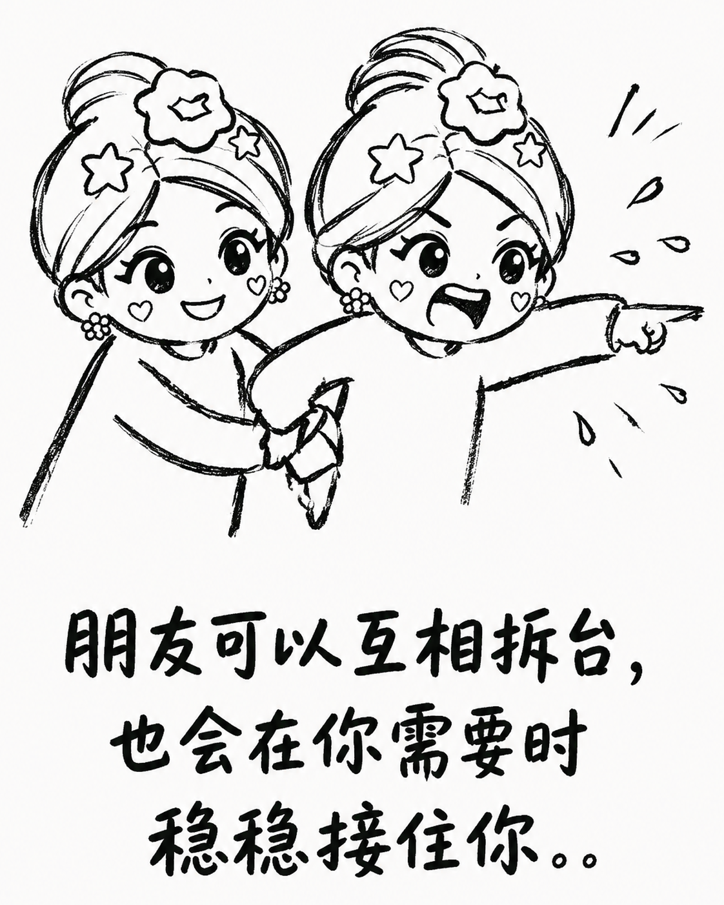
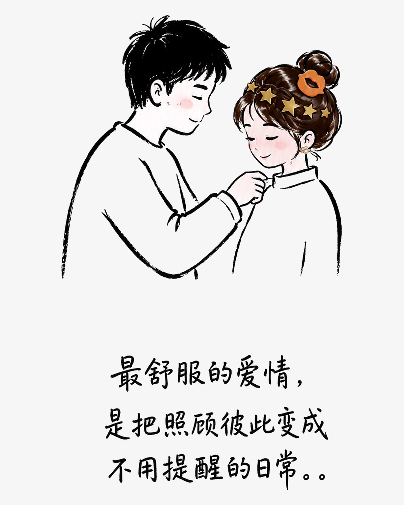
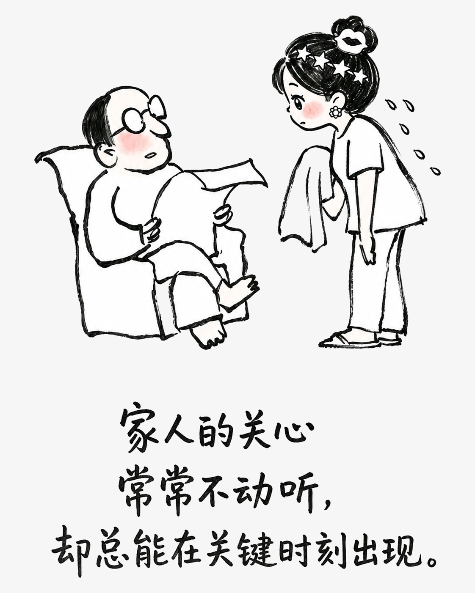

真正亲近的人，爱都藏在“嫌弃”里
有些关系不靠漂亮话维系，而是把麻烦接过来，把牵挂放进每一个小动作里。
朋友：嘴上吐槽，行动从不缺席
真正的朋友，往往不擅长说温柔话。你临时出差，她一边抱怨麻烦，一边替你照看宠物；你搬家，她说累得够呛，下一次却提前带好推车。你手头紧，她把钱转来，还故意写个玩笑备注。你们把金额算明白，却把情分留在心里。

恋人：嘴上不耐烦，心里一直惦记
亲密不是时时刻刻说情话，而是你深夜喊饿，他嘴上嫌你不会照顾自己，转身却送来热食；你情绪低落，他不一定会哄，只是默默把面煮好、把碗洗净。两个人都不擅长道谢，却把对方的习惯和需要记得很牢。

家人：争吵会过去，惦记一直都在
家人之间最常见的表达，可能是一句嫌你瘦、嫌你不会过日子，也可能是反复教你怎么处理手机和生活琐事。可抱怨之后，饭菜仍会端上桌，红包仍会塞进手里，遇到难处也总有人愿意搭把手。亲情从不追求两清，只希望彼此平安。

能让人安心的关系，从来不是没有摩擦，而是无论怎么拌嘴，关键时刻都愿意向彼此靠近。